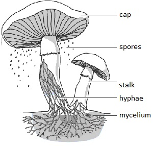
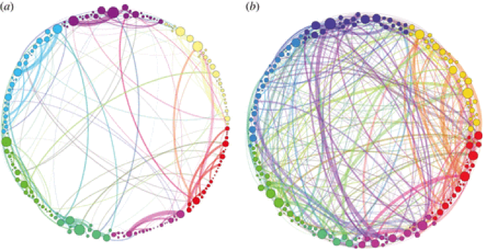

Fungi are members of the group of eukaryotic organisms that includes unicellular microorganisms such as yeasts and molds, as well as multicellular fungi that produce familiar fruiting forms known as mushrooms. They are classified under the Fungi kingdom, with 4 phyla: Zygomycota, Ascomycota, Basidiomycota, and Deuteromycota. Fungi are fundamental for life on earth in their roles as symbionts. Many fungi break down complex organic biomolecules which play a critical role in the global carbon cycle. Fungi acquire their food by absorbing dissolved molecules, usually by secreting digestive enzymes into their environment.
Mushrooms, the most recognized fungi are composed of their fruiting body above the ground, and their mycelium beneath the ground. Both portions of the mushroom are composed of hyphae, which are filamentous strands that build the mushroom. Other fungi such as yeasts are unicellular and do not contain hyphae. During a mushroom's specific growing season, their hyphae mature and become capable of producing spores. These matured hyphae can be seen from above the ground and are often called the fruiting body of the mushroom. Each spore is a unicellular organism that sends out a single hypha that eventually develops into its own mycelium. The mycelium of a fungus consists of the vegetative network of hyphae spanning the soil underneath the fruiting body of a mushroom. It is analogous to the roots of a plant. When the hypha of one spore meets the hypha of another spore, sexual reproduction occurs, producing another mushroom.
This phyla includes most molds. Zygomycota recieve nutrients through dead animals or plant remains. They can be parasitic and reproduce sexually.
Ascomycota includes yeasts, mildews, green-blue molds, and edible fungi such as the truffle or the morel. They are known for causing plant plagues and can reproduce sexually or asexually, depending on species.
This division includes most mushrooms, the pore fungi, puffballs, and the fungi that causes 'rust' on plants. Basidiomycota tend to have fruiting bodies. They are mainly asexual.
Also called Fungi Imperfecti, this phyla is a miscellaneous divison of fungi that do not fit in any other category.
Even the most experienced of mycologists and mushrooms hunters often have trouble telling if a mushroom is edible or not. Mushrooms can often look very similar, yet have dramatically different effects. An example is the morel, which is a prized mushroom that mushroom enthusiasts look for everyday. These mushrooms are used by gourmet cooks, especially in french cuisine. However, there are species dubbed "false morels" which may have a similar appearance to the sought after morel. False morels contain the toxin gyromitrin, which can cause coma or death in significant quantities. Specifically, gyomitrin attacks the central nervous system and prevents the body from using vitamin B, effectively starving essential bodily functions.
There are even more dangers with edible mushrooms. Even if one correctly identifies a morel, these safe mushrooms have the capacity to contain toxins such as arsenic or lead, based upon the soil that they reside in. In truth, the safest way to enjoy mushrooms is to eat ones that are grown in a farm, where the soil is artificially set and the mushrooms are manually planted.
For foraging for mushrooms, some easy to identify ones are the giant puffball, wood ears, hedgehog fungus, portabella mushrooms, and many others. With a little research, these mushrooms can be easily found and safely prepared. It is always essential to be careful when trying to eat wild mushrooms. You can be old, bold, but not both. When in doubt, do not eat a mushroom. Poisoning from a mushroom can be serious, so make sure to be safe.
The most common cause for mushroom poisoning are people who misidenty toxic mushrooms as edible mushrooms and ingest them. Toxins are not directly involved with normal growth, development, or reproduction of mushrooms and are produced in specific biochemical pathways in the fungal cell. The effects of the toxins can range from slight bowel discomfort to death.
There are many myths about identifying poisonous mushrooms. A common belief is that as long as the mushroom is thoroughly cooked it is safe to eat. There are some inedible mushrooms that become edible after special preparation. However, many of the toxins cannot be denatured by heat and thus cannot be rendered toxic free. Another common belief is that insects can tell which mushrooms are poinsonous and will avoid them. We should not assume that just because an insect is unaffected that we will also be unaffected. Fungi that are harmless to insects can still be toxic to humans. All poisonous mushrooms have a pointed cap is another common belief that is also untrue. The shape of the mushroom cap has absolutely no correlation to whether or not a mushroom is toxic. It is also believed that all white mushrooms are safe to eat. The color of mushrooms is not a good way to decide if a mushroom is toxic. The destroying angel is a good example of a mushroom that is white but extremely toxic.
Symptoms of mushroom poisoning can vary from an upset stomach to life-threatening organ failure that results in death. Serious symptoms don't always occur immediately after eating. Sometimes the symptoms only occur after the toxin atacks the kidney or liver which might happen days or even weeks later. A common symptom of mushroom poisoning is gastrointestinal upset, where vomiting and diarrhea occur but don't usually cause any long-term damage.
Last year, my cousin had an encounter with mushroom poisoning. Her father picked up what he thought were regular white looking mushrooms from the park and cooked them. She ate a couple pieces but stopped because they didn't taste good. The symptoms from the poisoning started to show about three hours later. She was constantly alternating between vomiting and having diarrhea until she passed out. Her parents called for an ambulance, but she woke up when they reached her house so they went to a medical center instead of the hospital. At the medical center she vomited again and they made her where a diaper because she couldn't control her bowel movements. The center called for an ambulance anyway because they didn't have the resources to treat her there. When she finally arrived at the ER she was able to get on her feet and walk, but when they started drawing her blood she passed out again. They rushed her into a different room and hooked her onto 2 IVs and put an oxygen mask on her. She was fading in and out and when she finally completely woke up she felt extremely cold. They stacked 4 heated blankets on her but she kept shivering. Eventually they took her out of the ER and into the pediatric ICU and hooked her up to 3 different machines. The nurses came every 5 hours to draw her blood. After a while she was able to actually pee again because she wasn't constantly having diarrhea anymore and the nurses would measure the volume of her pee. This all happened in the course of one night. Two nights later they started her on a liquid only diet. The nurses continued to draw blood periodically to keep count of the toxins in her liver. Before she was able to leave the hospital, a social worker came to talk to her to make sure that she wasn't being abused or poisoned. Eating a couple bites of that poisonous mushroom caused my cousin to be hospitalized for a couple days. This ties back to the myths that were mentioned above. Just because a mushroom is white or is cooked does not mean it is not toxic.
There are several species of fungi that contain psychotropic compounds which are chemical substances that changes brain function and alters perception, mood, or consciousness as a result. These species are typically consumed for either recreational or religious purposes. Not all species are purely psychedelic; some may also be toxic and have hallucinogenic properties.
Psilocybin mushrooms, commonly known as magic mushrooms or shrooms, contain psilocybin and psilocin which are toxins that affect the central nervous system. When psilocybin is broken down during ingestion, psilocin is produced which is what causes the psychedelic effects. The mind altering effects usually last about 3-8 hours and in the first 3-4 hours, vivid visuals and distortions in reality are experienced. The user may experience altered states of reality, hallucinations, feeling of euphoria, etc. It's possible for the user to have an unpleasant experience but poisoning is not likely unless ingested in extreme amounts. Anti-psychotic drugs such as Thorzaine can be used to suppress the hallucinations. Psiloybin is known to have therapeutic value. It can be used to treat depression, build new connections in the brain, and help people improve their outlook. The image on the left side is a brain without psilocybin and the image on the right is a brain with psilocybin.
Ergot fungi grow on rye and produce alkaloids that can cause ergotism when consumed. Ergotism is a disease that can cause vascular constriction that may lead to gangrene and also hallucinations. Some other symptoms are painful seizures and spasms, diarrhea, paresthesias, itching, mental effects including mania or psychosis, headaches, burning sensation, nausea and vomiting. Some suggest that ergotism is responsible for the hysterical symptoms of young women in the Salem Witch Trials, the epidemic known as Saint Anthony's Fire, and some modern outbreaks in France, Ethiopia, and India.
Micafungin is an antifungal agent; mycophenolate is used to prevent tissue rejection; rosuvastatin is usd to reduce cholesterol; and cefditoren as an antibiotic.
Penicllin
Cyclosporin A